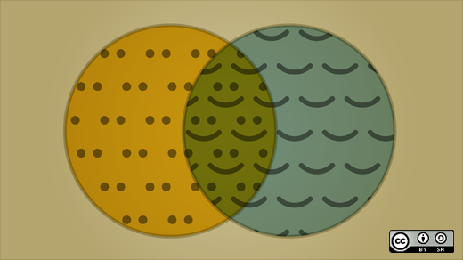
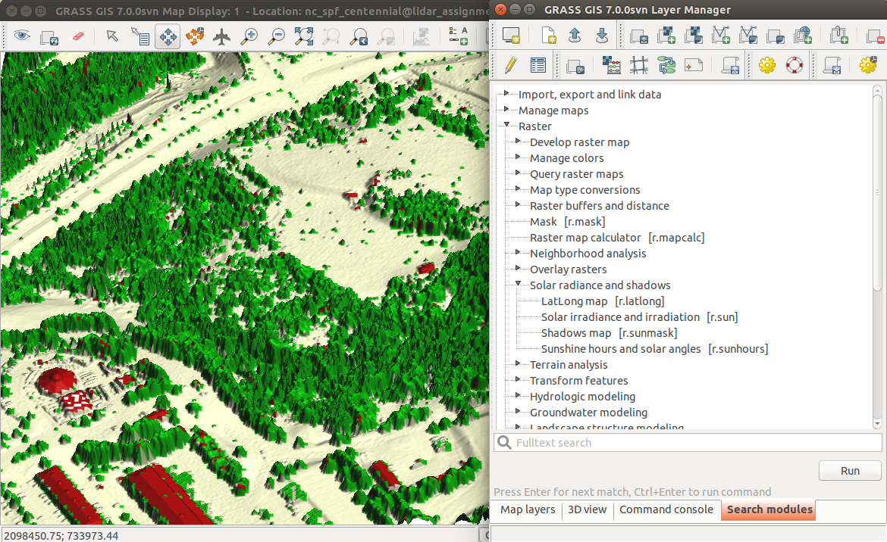
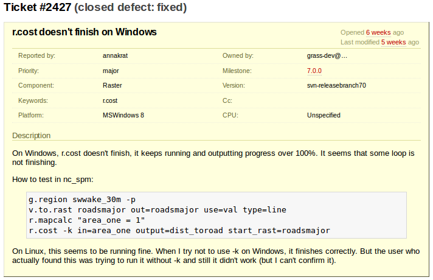

Navigating the Geospatial Open Source Software Landscape
Vaclav (Vashek) Petras, Corey White & Randal Hale
NCSU
GeoForAll Lab
at the
Center for Geospatial Analytics,
North Carolina State University & North River Geographic Systems, Inc.

NCGIS 2019 Winston-Salem
Feb 27 - Mar 1, 2019
Motivation
- vendor neutrality
- proprietary software has a single vendor (vendor lock-in)
- open source is not influenced by vendor's current business goals
- flexibility (use where you want, when you want)
- interoperability
- open source aims to support standards
- proprietary software often uses propriety formats
- cost (no license fees, no license management)
- low total cost of ownership (includes cost to upgrade or migrate)
- support (many free options available by default)
- money not spent on license fees can be used for support or features
- influence in development (direct access to developers)
Motivation
- In science:
- Software must be available to readers [Nature Methods - 4, 189, 2007].
- Use of open source tools is part of reproducibility [Lees 2012].
Motivation
- Users of open source are more happy when using the software. 1

Image credit: opensource.com
- No research to support that.
Free, Libre and Open Source
Similar to each other:
- open source software
- free software
- libre software
- FS, OS(S), FOSS, FLOSS
Very different from FLOSS:
- proprietary software
- freeware
- shareware
- freemium (clouds and apps)
- open API (public API)
Free, Libre and Open Source
- open source and free software
- some argue open misses the point about freedom
- free is often misunderstood as free of charge
- FLOSS
- includes libre to address the confusion about free (gratis versus libre)
- FOSS and FOSS4G is often used in the geospatial community
- free refers to user's freedom
- open source refers to open development model
- FOSS4G (free and open source software for geospatial)

Four freedoms
- According to FSF, there are four freedoms that you should have as a user:
- the freedom to use the software for any purpose,
- the freedom to change the software to suit your needs,
- the freedom to share the software,
- the freedom to share the changes you make.
Commercial and FOSS
- FOSS can be used commercially
- FOSS can be commercial but not proprietary
- FOSS can be used to build closed platforms
- Famous FOSS examples (non-geospatial):
Types of FOSS licenses
- copyleft licenses
- example: GNU GPL
- free software licenses (according to four freedoms by FSF)
- code cannot be combined with proprietary (and closed) code into one program
- examples: Linux, R, GRASS GIS, QGIS
Types of FOSS licenses
- permissive licenses
- examples: BSD, MIT
- source code can be modified, closed and sold as proprietary
- more freedoms for the developer
- can combine the source code and software more freely
- can make the new software proprietary
- less freedoms for the user (might not get the source code, thus freedoms)
- example: GDAL used in QGIS as well as in ArcGIS
Users and FOSS licenses
- licenses are mostly important for the developers
- users don't have to worry about the license
- as long as they know that the software is under some known license
- lists of known licenses:
- this is different from proprietary software
- user must read and agree to EULA or similar type of agreement
- license is used in the meaning license to use
- use often paid or limited (or both) for proprietary software
- as opposed to FOSS licenses which cover things beyond simple usage
Software
Source code

trac.osgeo.org/grass
trac.osgeo.org/grass/...r.slope.aspect...#L790
Commit (Changeset)

Who can make changes?
Wikipedia:
- everybody can make changes
OpenStreetMap:
- everybody registered can make changes
Open source projects:
- only people with granted access can make changes
- everybody can view changes
- everybody can discuss changes
- everybody can make changes in their local copy
- everybody can make changes and submit them for approval
Review (and revert)

[GRASS-dev] Handling of Python scripts on MS Windows (October, 2013)
Ticket (Issue): Bug report
Ticket: Feature request

Changes (History, Timeline)

Geospatial analysis and remote sensing
Which software should I choose for my work?
| QGIS |
GRASS GIS |
gvSIG |
uDig |
SAGA |
Orfeo ToolBox |
Example Desktop Software Stack
- GIS
- QGIS, GRASS GIS
- statistics and scripting
- Python, R
- database, attribute/tabular data
- SQLite, PostgreSQL with PostGIS, LibreOffice
- graphics
- Inkscape, Gimp, ImageMagic
- Portability: works on Linux, Mac, Windows
- Interoperability: programs designed to work with others
- Flexibility: standards and open formats allows to switch different components
- Scalability: can be copied to more machines at no cost
Development statistics

FOSS4G Organizations
- OSGeo
- global organization, local chapters and related projects like GeoForAll
- OpenStreetMap
- data, applications, services

FOSS4G Organizations
- LocationTech
- working group at Eclipse Foundation
- FOSS4G conferences
- global and local conferences
- Individual projects and communities
- projects and communities exist on their own
Support
- Community support
- Mailing lists
- archived conversations
- Geographical Information Systems Stack Exchange
- question and answers are ranked to increase quality
- Mailing lists
- Commercial support
- See each project's support, contributors, or donors page
- Examples (shameless plug):

Take a class: geospatial.ncsu.edu/geoforall
Work with us: geospatial.ncsu.edu/engage/service-center
Twitter: vaclavpetras
GitHub: wenzeslaus
GitLab: vpetras
Come to see the NCSU Center for Geospatial Analytics booth!
Talk to me at the poster session!